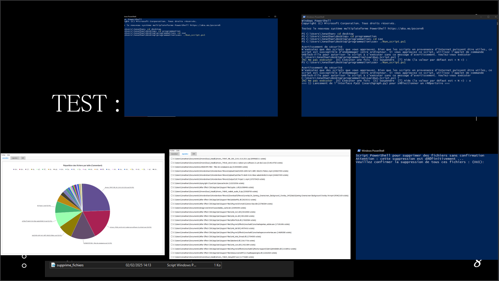

Langages de programmation : HTML et CSS pour concevoir des Sites Web
HTML sémantique : structuration du contenu (header, nav, sections, footer)
CSS avancé :
Flexbox et CSS Grid pour la mise en page (grille de compétences, zones de texte)
Media queries pour un rendu responsive mobile/tablette/desktop
Transitions simples (hover sur boutons, liens)
Optimisation des médias :
Compression et redimensionnement d’images (logo, photo de profil)
Chargement différé (lazy-load) pour alléger le temps de chargement

SAé 1.05 Traiter des données
Langages de programmation : Python et Powershell pour concevoir un analyseur de disque dur
PowerShell :
Scripts utilisant Get-PhysicalDisk, WMI/CIM pour collecter l’état matériel
Automatisation de l’inventaire disque sur plusieurs machines
Python :
Parsing des sorties PowerShell (fichiers .txt/CSV) via les modules csv et re
Agrégation et nettoyage des données avec pandas
Génération de rapports graphiques (camembert, histogrammes) avec matplotlib
Gestion des erreurs & logs :
Mise en place d’un système de journalisation (logging)
Messages utilisateurs clairs en cas d’anomalie (disque non détecté…)
Création d'un site Web
Langages de programmation : HTML et CSS pour concevoir des Sites Web
Compétences Techniques
AC13.01 | Utiliser un système informatique et ses outilsl
AC13.02 | Lire, exécuter, corriger et modifier un programme
AC13.03 | Traduire un algorithme, dans un langage et pour un environnement donné
AC13.04 | Connaître l’architecture et les technologies d’un site Web
AC13.05 | Choisir les mécanismes de gestion de données adaptés au développement de l’outil et argumenter ses choix
AC13.06 | S’intégrer dans un environnement propice au développement et au travail collaboratif